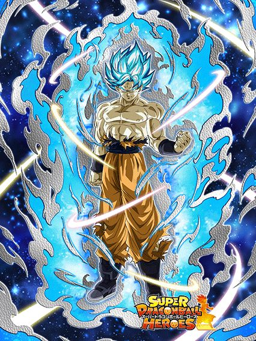
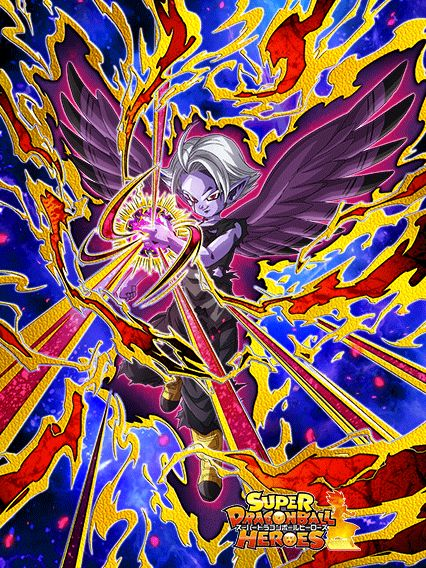
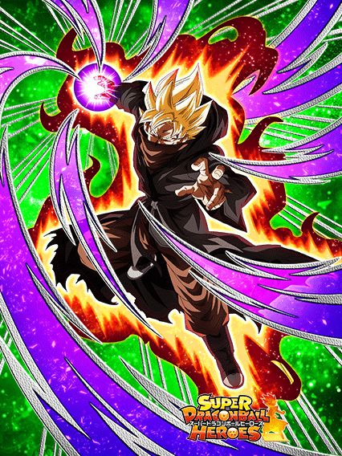

NOVIDADES

Goku SSJB Universal

Esse cara builda 200% de DEF atacando 5 vezes e a intro dele dá +200% de DEF, o que é bom, mas só por 4 turnos 💀
Caso tenha um aliado Xeno ou 3 aliados Crossover no time, ele lança um adicional de 70% de chance de ser SA e muda orbs aleatoriamente pra STR
Pegando 5 orbs ele tem Defesa Ativa e 40% de redução de dano, e caso ele pegue 7 orbs, ele fica com 300% de ATK pro resto da partida
E ele tem a Active linda que dá dano

Em geral, o Goku é um bom card, mas que pode facilmente morrer se não conseguir os orbs
Por sinal, graças a ele, agora personagens do Heroes tem voz no Global, o que é realmente muito bom.
Fu com um nome estupidamente longo

Pq ele não tem uma Leader Skill 200%? 💀
Esse cara lança 1 adicional com 50% de chance de ser SA sempre, e mais outro com 70% de chance se tiver um aliado Extreme Class
Cada Super dá 20% de redução de dano no turno, e também stacka 50% de ATK, então ele tem bom dano e defesa
A habilidade mais estranha dele é ter 50% de chance de mudar todos os orbs pra AGL ou TEQ à partir do turno 5.. tipo.. que???
Aeos INT

A grande mecânica da Aeos é ganhar MUITA defesa na hora que ela recebe um golpe, similar ao Trio SSJ da WWC
Juntamente com isso, ela tem 50% de chance de desvio que aumenta de 10% em 10% a cada desvio no turno, podendo chegar a desvio garantido em todo turno se vc der sorte
E ela ainda dá 64% de ATK e DEF pra Crossover, o que é bem forte
O triste é saber que provavelmente nunca teremos um card dela transformada 💀
"Cara que certamente não é o Bardock"

Mudar de nome não salvou ele da maldição dos Bardocks.
Esse cara é um completo desastre, ganhando todos os buffs dele só quando o inimigo estiver abaixo de 40% de HP 💀
Esses buffs incluem 90% de chance de crítico, 300% de ATK, 70% de redução de dano ANTES DE ATACAR, e outros 50% de ATK se o inimigo estiver debuffado
Em resumo, não dá pra usar esse card
Dark King Demigra
")
Cuidado com a propaganda enganosa.
Esse cara quer ficar no slot 1 pra ter mais ATK e DEF e ter 80% de redução de dano.. mas a defesa dele é horrível.
Fora do slot 1 ele tem menos stats e só 60% de redução, mas pelo menos ele dá 60% de ATK pra Extreme Class e tanka decentemente pós super